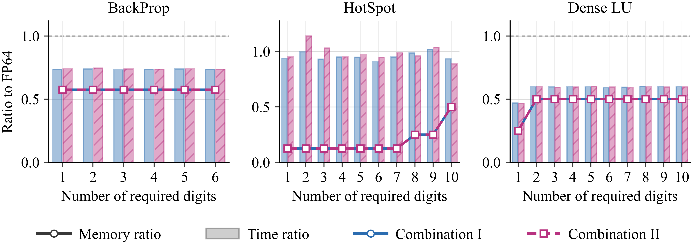

Benchmark Results
This page summarizes the result artifacts currently stored in the repository.
The paper figures and CSV files live mainly under papers/.
For format definitions and the meaning of a significant-digit target, start with Precision Tuning Explained. For fair comparisons and the distinction between search cost and application speed, see Benchmark Methodology and Value.
CPU PROMISE Precision Search
The CPU experiments evaluate PROMISE precision assignments over the standard precision combinations I-IV. For each required number of correct significant digits, PROMISE runs the CADNA reference computation and uses delta debugging to accept or reject candidate mixed-precision configurations.
The precision-search figures report:
stacked precision counts for the final PROMISE configuration;
PROMISE search wall time, including reference execution, transformations, compilation, and candidate executions.
The timing curves are therefore search costs, not standalone kernel runtimes. Small timing differences between neighboring digit targets can reflect a different delta-debugging search path even when the final precision assignment is unchanged.
Representative paper plots are stored under papers/plots and in individual
benchmark folders.
One-Bit Exploration
The 1-bit-exps directory contains controlled custom-format sweeps. For a
benchmark and a required significant-digit target, PROMISE is run with FP64 and
one custom type. The sweep either:
fixes the exponent bitwidth and varies the trailing-significand bitwidth; or
fixes the trailing-significand bitwidth and varies the exponent bitwidth.
The resulting figures show how many variables can remain in the tested custom format. The current paper-style figures include Hotspot and Dense LU because they represent two contrasting structures: a regular stencil computation and a direct dense linear-algebra kernel.
Regenerate one-bit figures:
cd 1-bit-exps
python3 onebit_precision_analysis1.py --run --benchmark hotspot --benchmark dense_lu --digits 1-10
onebit_precision_analysis1.py through
onebit_precision_analysis4.py provide alternative visualizations. Omit
--run to regenerate plots from existing CSV files without repeating the
PROMISE search.
H100 Direct CUDA Results
The H100 validation data are stored under papers/h100_results. The latest
checked-in runs are:
Directory |
Benchmark |
Input size |
Notes |
|---|---|---|---|
|
Backprop |
262,144 input elements |
Combinations I-II |
|
Hotspot |
1024 x 1024 grid, 2 iterations |
Combinations I-II |
|
Dense LU |
5000 x 5000 matrix |
Combinations I-II |
The ratio CSV schema is described in API References. In the current stored results:
Backprop reduces tracked device allocation to about 57.5 percent of FP64 and reports time ratios from 0.734 to 0.745.
Hotspot reduces tracked device allocation from 12.5 percent to 50 percent of FP64 depending on the requested digits, with time ratios from 0.887 to 1.139.
Dense LU reduces tracked device allocation to about 25 percent for one required digit and about 50 percent for the other tested digit levels, with time ratios from 0.467 to 0.601.
The combined paper-style figure is available at:


Run-specific outputs include:
cuda_h100_raw.csv: direct executable outputs.cuda_h100_ratios.csv: normalized time, memory, speedup, and validation fields.build_cuda_h100.log: build log.figures/: generated plots.benchmark-specific output directories such as
hotspot_outputs,backprop_outputs, anddense_lu_solutionswhen generated by the run.
Regenerate H100 figures from a result directory:
cd papers/h100_results
python3 plot_h100_ratios.py <job-id> --font-size 12
python3 plot_h100_ratios_combined.py <job-id> --font-size 12
python3 plot_h100_benchmark_panels.py --font-size 10
Complementary H100 Results
papers/complement contains reviewer-facing experiments that help interpret
the direct CUDA validation:
direct_case_rerun.csvanddirect_case_ratios.csvrerun the direct CUDA cases for the manifest entries.profile_breakdown.csvseparates reported CUDA-event kernel time from end-to-end executable wall time and non-kernel overhead.tensorcore_complement.csvrecords Tensor Core complement measurements when applicable and marks non-applicable cases explicitly.tensorcore_ratio_summary.csvsummarizes Tensor Core ratios and errors.
The complement data currently include a Dense LU blocked-update Tensor Core comparison. Backprop and Hotspot entries are marked not applicable where the original PROMISE-derived computation is not a large Tensor-Core-suitable GEMM.
Regenerate complement plots:
cd papers/complement
python3 plot_complement_h100.py results/<job-id> --font-size 12
Interpretation Notes
The H100 memory ratio is based on tracked cudaMalloc byte counts for
device-resident arrays and work buffers. It is an allocation-footprint metric,
not a count of source-level variables.
The H100 time ratio is the mixed-precision CUDA time divided by the FP64 CUDA baseline time for the same benchmark input. Each configuration is timed after one warm-up run and averaged over the requested measured runs, normally three for the main validation scripts.
Time ratio is not guaranteed to improve monotonically with lower memory use. For example, Hotspot can reduce allocation substantially but remain close to FP64 runtime because the direct CUDA port stores data in low precision while performing scalar conversions inside a short stencil kernel.